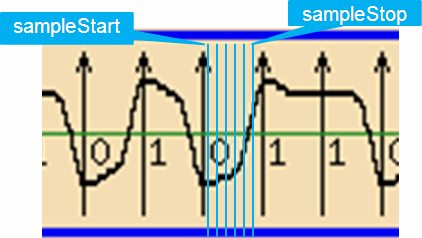
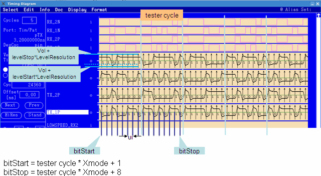

DIGITAL_WAVEFORM
The purpose of this class is to capture (approximately) a segment of an actual digital output signal. To do so, the instances of DIGITAL_WAVEFORM execute m * n functional tests in a double loop. The n functional tests of the inner loop serve to determine the actual voltage level of the output signal at a certain edge position for all x used receive edges. This is achieved by linearly modifying the receiver threshold with a fixed step width (within a range based on the level setup threshold) for each of the n tests. The outer loop moves the positions of the receive edges m times to the right by a fixed step width after every n functional tests. The result is a sequence of m * x voltage levels that approximates the specified segment of the output signal.
This class can also be used to retrieve the eye diagram, perform an eye mask test and retrieve the min, max, mean or rms values from the captured waveform. All operations can be performed on both single-ended and differential waveforms. This API supports parallel multi-site testing.
To retrieve a signal segment of a digital output pin, the following parameters must be set:
- Segment length: The unit for defining the length of the segment to be captured is bits, where "bit" is the distance between two edges in a tester cycle. In x-8 mode, for example, there are 8 bits in one tester cycle. (Refer to X-mode cycles versus tester cycles.) The segment length is defined with the member functions bitStart() and bitStop(). Bits are counted across tester cycles.
- Number of samples per bit: The number of samples is defined in two steps. First, you
have to define the step width between two sample positions within one bit. This is done either
with the timingResolution() function, which defines the distance between two
sample points, or with the samplesPerBit() function, which defines the
number of sample positions within one bit. In addition, you can restrict capturing to a certain
section of the bit with the sampleStart() and
sampleStop() member functions. This parameter determines the number
m, that is, how often the outer loop is repeated.

- Level range and step width: The level range and level step width determine the
different thresholds that are successively used to determine the actual voltage level at a
certain sample position. A functional test is performed with each of these thresholds from the
start voltage to the stop voltage. The actual voltage level at the sampling position is
supposed to be between the thresholds where the test result changes from PASS to FAIL or from
FAIL to PASS. The step width is defined with the Resolution() member
function. The range is calculated from the values of the levelStart() and
levelStop() functions, which specify the distance of the start and the stop
threshold from the level setup value. The calculation is performed by the following
formulas:
actual_start_level = level_resource_value + levelStart() * levelResolution()
actual_stop_level = level_resource_value + levelStop() * levelResolution()
Here, level_resource_value is the value of the resource vol if two receiver thresholds are supported, and that of vth if only one receiver threshold exists.
If levelStart() is set to -20, levelStop() to 20, and levelResolution() to 0.01, the search will be performed in the range [level_resource_value - 0.2V, level_resource_value + 0.2V].
These parameters determine n, that is, how often the inner loop is repeated.
The following timing diagram shows an example of capturing the digital waveform in x-8 mode.

This API is defined in the header file /opt/hp93000/soc/prod_com/include/MAPI/DigitalWaveform.h.
Constructor
DIGITAL_WAVEFORM(const STRING& pinlist)
This constructor creates an object to retrieve the digital waveform of the specified pins. The eye diagrams, the eye mask test result and the waveform values such as min, max, mean and rms can also be retrieved.
pinlist |
The pins/pin groups on which to perform the test. |
Member functions
Setup functions:
bitStart() bitStop() sampleStart() sampleStop() timingResolution() samplesPerBit() levelStart() levelStop() levelResolution()
Execution function:
execute()
Query functions:
getBitStart() getBitStop() getSampleStart() getSampleStop() getTimingResolution() getSamplesPerBit() getLevelStart() getLevelStop() getLevelResolution() getWaveform() putWaveform() getEyeDiagram() getWaveformValue() checkEyeMask() getSingleEndedWaveformValues() getDifferentialWaveformValues()
Examples
Set the data retrieval range
DIGITAL_WAVEFORM(pin).bitStart(0); DIGITAL_WAVEFORM(pin).bitStop(8191);
This
example sets the bit number where data retrieval starts to 0 and the bit number where data
retrieval stops to 8191. In x-1 mode, the bit number is the same as the number of tester cycle.
In x-N mode, the bit number is tester_cycle*xMode + m
(1=<m<=N).
Set the sampling point offset
DIGITAL_WAVEFORM(pin).sampleStart(0); DIGITAL_WAVEFORM(pin).sampleStop(63);
This example sets the sampling point offset to start data retrieval to 0 and the sampling offset to stop data retrieval to 63.
Set the sampling points per bit
DIGITAL_WAVEFORM(pin).samplesPerBit(120);
This example sets the number of sampling points for data retrieval in 1 UI to 120.
Set the time resolution
DIGITAL_WAVEFORM(pin).timingResolution(5 ps);
This example sets the timing resolution for data retrieval to 5 ps.
Set the level sweep range
DIGITAL_WAVEFORM(pin).levelStart(-50); DIGITAL_WAVEFORM(pin).levelStop(50);
This example sets the start offset of the level sweep to -50 and the stop offset of the level sweep to 50. The level sweep start voltage is level_resource_value - 50 * levelResolution(). The level sweep stop voltage is level_resource_value + 50 * levelResolution().
Set the level resolution
DIGITAL_WAVEFORM(pin).levelResolution(10 mV);
This example sets the level resolution for a level search to 10mV.
Execute the test and retrieve the settings
DIGITAL_WAVEFORM(pin).execute(); INT bitstart = DIGITAL_WAVEFORM(pin).getBitStart(); INT bitstop = DIGITAL_WAVEFORM(pin).getBitStop(); INT samplestart = DIGITAL_WAVEFORM(pin).getSampleStart(); INT samplestop = DIGITAL_WAVEFORM(pin).getSampleStop(); INT samples = DIGITAL_WAVEFORM(pin).getSamplesPerBit(); DOUBLE timingres = DIGITAL_WAVEFORM(pin).getTimingResolution(); INT levelstart = DIGITAL_WAVEFORM(pin).getLevelStart(); INT levelstop = DIGITAL_WAVEFORM(pin).getLevelStart(); DOUBLE levelres = DIGITAL_WAVEFORM(pin).getLevelResolution();
In this example, the first line executes a level search for each sampling point, uploads the data from the hardware and calculates a voltage value for each sampling point.
The following lines return
- the bit number where data retrieval starts and stops,
- the sampling point offset to start and stop data retrieval,
- the number of sampling points and the timing resolution for data retrieval,
- and the start and stop offset for the level sweep and the resolution for the level sweep.
Overwrite the waveform data and retrieve the waveform data
const int numOfBits = 9;
STRING pin(posPin);
pin += ",";
pin += negPin;
DIGITAL_WAVEFORM(pin).bitStop(numOfBits - 1);
DIGITAL_WAVEFORM(pin).execute();
int posData[numOfBits] = { 0, 1, 2, 3, 4, 3, 2, 1, 0 };
int negData[numOfBits] = { 0, -1, -2, -2, -2, -2, -2, -1, 0 };
ARRAY_I posWaveform(posData, numOfBits);
ARRAY_I negWaveform(negData, numOfBits);
DIGITAL_WAVEFORM(pin).putWaveform(posPin, posWaveform);
DIGITAL_WAVEFORM(pin).putWaveform(negPin, negWaveform);
ARRAY_I tmp;
tmp = DIGITAL_WAVEFORM(pin).getWaveform(posPin);In this example, two waveforms are defined and used to overwrite the waveform data retrieved from the previous execution. The last line returns the waveform data of the pin posPin.
Retrieve eye diagram data
ARRAY_D eyeX, eyeY; DIGITAL_WAVEFORM(pin).getEyeDiagram(posPin, TM::SINGLE_ENDED, eyeX, eyeY); DIGITAL_WAVEFORM(pin).getEyeDiagram(posPin, TM::DIFF_SWING, eyeX, eyeY); DIGITAL_WAVEFORM(pin).getEyeDiagram(posPin, TM::DIFF_COMMON, eyeX, eyeY);
This example returns eye diagram data for pin posPin in the array eyeX and eyeY.
Retrieve single ended waveform data
WAVEFORM_RESULT result; DIGITAL_WAVEFORM(pin).getSingleEndedWaveformValues(posPin, result); DIGITAL_WAVEFORM(pin).getSingleEndedWaveformValues(posPin, result, true);
This example returns single-ended waveform data. The last line returns the rms value while the second line does not.
Retrieve differential waveform data
DIFF_WAVEFORM_RESULT diff_result; DIGITAL_WAVEFORM(pin).getDifferentialWaveformValues(posPin, diff_result); DIGITAL_WAVEFORM(pin).getDifferentialWaveformValues(posPin, diff_result, true);
This example returns differential waveform data from the execution. The last line returns the rms value while the second line does not.
Retrieve the eye mask test result
ARRAY_I maskResult;
DOUBLE eyeHeight, eyeWidth;
DIGITAL_WAVEFORM(pin).putWaveform(posPin, dataY);
DIGITAL_WAVEFORM(pin).putWaveform(negPin, dataY);
DIGITAL_WAVEFORM(pin).checkEyeMask(posPin, TM::SINGLE_ENDED, maskX, maskY,
maskResult, eyeWidth, eyeHeight);
DIGITAL_WAVEFORM(pin).checkEyeMask(posPin, TM::SINGLE_ENDED, maskX, maskY,
maskResult, eyeWidth, eyeHeight, true);This example returns the eye mask test result plus the eye_height and eye_width for posPin in single-ended mode. The last line shifts the mask on the time axis while the fifth line does not.
Functional changes
- Introduced before SmarTest 6.3.2
- SmarTest 7.2.2: The API now also supports the STD mode on all supported systems.